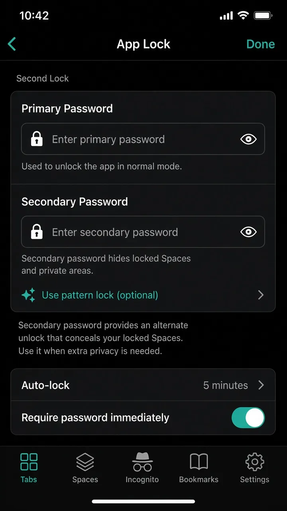

A decoy unlock, not a second app
Turn on App Lock first, then enable Second Lock with the same method (PIN or pattern) but a different code. Hand someone the secondary code under pressure—the app looks normal, while protected Spaces never appear.
